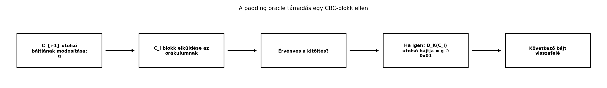

Képzeljünk el egy webszervert, amely CBC-módban titkosított sütiket
fogad. A szerver a visszafejtés után ellenőrzi a kitöltést, és ha az
érvénytelen, egy 400 Invalid padding hibát ad vissza, míg
ha érvényes, de a tartalom hibás, más hibát. Az üzemeltető azt gondolja:
„Ez ártalmatlan hibaüzenet, nem adja ki a kulcsot.” Valójában ez az apró
különbség elég ahhoz, hogy a támadó a teljes nyílt szöveget
visszafejtse, anélkül hogy a kulcsot ismerné. Ez a padding oracle
támadás, a modern kriptográfia egyik legtanulságosabb
„chosen-ciphertext” támadása.
Ebben az alfejezetben felépítjük a PKCS#7-kitöltést, megértjük, miként válik a „helyes/helytelen kitöltés” jelzés orákulummá, majd lépésről lépésre végrehajtjuk a támadást egy CBC-blokk ellen. A tanulság az, hogy a titkosítás önmagában nem nyújt integritást, és a helyes sorrend az encrypt-then-MAC.
A CBC-mód visszafejtési képlete:
ahol a blokkrejtjel visszafejtő függvénye, az előző rejtett blokk, az aktuális nyílt blokk. Ha a támadó az előző blokk egyetlen bájtját megváltoztatja, akkor a visszafejtett ugyanazon pozíciójú bájtja kiszámíthatóan megváltozik, mert a XOR lineáris. A többi bájt változatlan marad. Ez a tulajdonság a „malleabilitás”: a rejtett szöveg megváltoztatása hat a nyílt szövegre.
A padding oracle támadás ezt használja ki: a támadó az előző blokk hátsó bájtjait próbálgatja, és figyeli, mikor mondja a szerver, hogy a kitöltés érvényes. Ebből bájtonként vissza tudja fejteni a közbülső értéket, majd a valódi ismeretében a nyílt blokkot.

Az ábra a támadás egy iterációját mutatja: a támadó választ egy
g értéket, beállítja az előző blokk utolsó bájtját, és az
orákulum 1/0 válasza alapján kinyer egy
bájtot.
A blokkrejtjelek fix méretű blokkokat titkosítanak (AES-nél 16 bájt). Ha az üzenet hossza nem többszöröse a blokkméretnek, a nyílt szöveget ki kell tölteni. A leggyakoribb séma a PKCS#7-kitöltés (Padding).
Definíció. Legyen a blokkméret
bájt, és az üzenet utolsó részének hossza
bájt, ahol
.
A PKCS#7-kitöltés
darab bájtot ad hozzá, ha
,
és mindegyik hozzáadott bájt értéke
.
Ha
,
azaz az üzenet utolsó része pontosan blokkméretű, akkor egy teljes
kitöltőblokkot adunk hozzá:
darab,
értékű bájtot (AES-nél 16 darab 0x10). A hozzáadott bájtok
száma tehát mindig
és
közé esik, így a visszafejtő egyértelműen felismeri a kitöltést.
Példa. Blokkméret
bájt. Az üzenet 0x48 0x65 0x6C 0x6C 0x6F (5 bájt, „Hello”).
A hiányzó
,
ezért a kitöltés 0x03 0x03 0x03. A teljes nyílt blokk:
48 65 6C 6C 6F 03 03 03.
A kitöltés ellenőrzése a visszafejtés után a következőképpen történik:
pad_len = pt[-1].pad_len kívül esik az 1..b tartományon,
a kitöltés érvénytelen.pad_len
bájt mindegyike megegyezik pad_len értékkel.Ha bármelyik ellenőrzés sikertelen, a rendszer „hibás kitöltést” jelez. Ez a jelzés a padding oracle.
Megjegyzés. A PKCS#7 név kissé pontatlan: a PKCS#5
definiálta 8 bájtos blokkméretre, de a gyakorlatban a PKCS#7-et minden
méretre használjuk. A cryptography könyvtárban
padding.PKCS7(block_size_bits) néven érhető el.
A padding oracle egy olyan függvény, amely tetszőleges rejtett szövegblokkra megmondja, hogy a visszafejtett nyílt szöveg kitöltése érvényes-e.
Definíció. Tegyük fel, hogy a szerver ismeri a kulcsot. A padding orákulum egy függvény, amely egy párra a következőt adja vissza:
A valós rendszerekben ez a 0/1 sokféle formában jelenhet
meg:
invalid padding versus invalid MAC.A támadó számára nem kell megérteni a belső működést; elég, ha az
1/0 választ megbízhatóan meg tudja különböztetni.
A támadást Serge Vaudenay publikálta 2002-ben, és a CBC-módú titkosítás ellen működik, ha nincs hitelesítés. Célunk egy adott blokk visszafejtése úgy, hogy ismerjük az előző blokkot (az első blokk esetén az IV-t).
Vezessük be a közbülső értéket (intermediate value). Ekkor a nyílt blokk:
Ha meg tudjuk határozni -t, akkor a valódi ismeretében megkapjuk -t.
A támadó módosítja
utolsó bájtját egy g értékre. A módosított előző blokk
legyen
.
A visszafejtett nyílt szöveg utolsó bájtja:
Azt akarjuk elérni, hogy ez 0x01 legyen, mert ez egy
érvényes 1 bájtos kitöltés. Tehát keressük azt a g értéket,
amelyre az orákulum 1-et ad. Ha ilyen g-t
találunk, akkor:
Mivel g 256 lehetséges érték, a keresés legfeljebb 256
kérést igényel.
Tegyük fel, hogy már ismerjük az utolsó
bájtot:
.
Most a
-edik
bájtot hátulról keressük. A cél az, hogy a visszafejtett blokk utolsó
bájtja mind j legyen (érvényes
bájtos kitöltés). Ehhez először beállítjuk az ismert hátsó bájtokat:
Ezután a
-edik
bájtot próbálgatjuk:
,
és figyeljük az orákulumot. Amikor az orákulum 1-et ad, a
visszafejtett bájt értéke j, tehát:
Így haladunk hátulról előre, amíg az egész blokk közbülső értékét meg nem kapjuk. A teljes költség bájtonként legfeljebb 256 kérés, tehát 16 bájtos blokk esetén összesen legfeljebb kérés.
Előfordulhat, hogy az utolsó bájt keresésekor a természetes
is érvényes kitöltést ad, mert az eredeti nyílt szöveg utolsó bájtja
éppen a kitöltés hossza. Ilyenkor két érvényes g érték is
lehet. Ezt a támadó úgy kezeli, hogy miután talál egy érvényes
g-t, megváltoztatja az utolsó előtti bájtot is, és újra
megkérdezi az orákulumot. Ha az orákulum továbbra is 1,
akkor az utolsó bájtot 1-re állítottuk; ha 0, akkor a
találat a természetes kitöltés volt, és folytatni kell a keresést.
Vegyünk egy elméleti 4 bájtos blokkrejtjelet, ahol a függvény a következő kimenetet adja egy adott blokkra:
értéke legyen DE AD BE EF.
Legyen az előző blokk
= 10 20 30 40.
A tényleges nyílt blokk tehát
= CE 8D 8E AF. Ez nem érvényes kitöltés, mert az utolsó
bájt AF, ami > 4. A támadó ezt nem tudja, csak az
orákulumot használhatja.
Utolsó bájt. A támadó az utolsó bájtot próbálgatja.
Az
= EF. Ahhoz, hogy a visszafejtett utolsó bájt
0x01 legyen, a szükséges g érték:
ami bájtokban: EF ^ 01 = EE.
Amikor a támadó g = 0xEE-t állít be, az orákulum
1-et ad. Ebből megkapja:
.
Utolsó előtti bájt. Most a cél: az utolsó két bájt
0x02, 0x02. Először beállítja az ismert utolsó bájtot:
ami bájtokban: EF ^ 02 = ED.
Ezután keresi az utolsó előtti bájtot. Az
= BE, tehát a szükséges g:
ami bájtokban: BE ^ 02 = BC.
Ha g = 0xBC, az orákulum 1-et ad. Ebből
.
Harmadik bájt. Cél: utolsó három bájt
0x03, 0x03, 0x03. Beállítjuk az ismert két bájtot
0x03-mal XOR-olva, majd a harmadikat keressük. Az
= AD, tehát a szükséges
.
Az orákulum igazat ad, így
.
Negyedik bájt. Cél: mind a négy bájt
0x04. Beállítjuk az ismert három bájtot, majd a negyediket
keressük. Az
= DE, a szükséges
.
Az orákulum igazat ad, így
.
A teljes közbülső értéket megkaptuk: DE AD BE EF. A
valódi
= 10 20 30 40 ismeretében a nyílt blokk
:
DE AD BE EF ^ 10 20 30 40 = CE 8D 8E AF.
Ez megegyezik a tényleges értékkel. A támadás sikerült.
Az alábbi ábra a négy fázis sikeres próbáját mutatja: soronként a
módosított
,
a rejtett
és a visszafejtett
.
A g értékeket 0x00-tól felfelé próbálva a négy fázis együtt
823 orákulum-kérést igényel (az első fázisban egy további,
kétértelműséget kizáró kéréssel).
A padding oracle támadás gyökere az, hogy a rendszer a hitelesítés ellenőrzése előtt foglalkozik a kitöltéssel, és a hibák különbözőek. A helyes sorrend a következő:
Encrypt-then-MAC. A feladó először titkosítja az üzenetet, majd a rejtett szövegre számít egy MAC-et, és mindkettőt elküldi. A fogadó először a MAC-et ellenőrzi, és csak akkor fejti vissza a rejtett szöveget, ha a MAC érvényes. Ekkor a támadó által módosított rejtett szöveg a MAC-ellenőrzésen elbukik, és a szerver soha nem ad vissza padding hibát, mert a visszafejtésre nem is kerül sor.
AEAD (Authenticated Encryption with Associated Data). A modern gyakorlatban hitelesített titkosító módokat használunk, mint az AES-GCM vagy a ChaCha20-Poly1305. Ezek a titkosítást és a hitelesítést egyetlen konstrukcióban egyesítik, és nem használnak PKCS#7-kitöltést, így a padding oracle támadás fel sem merül.
Hibakezelés. Ha mégis CBC + HMAC szerkezetet használunk (például régi TLS-ben), a hibaválaszokat egységesíteni kell: minden visszafejtési hiba ugyanazt az üzenetet adja. De ez önmagában nem elég, mert az időzítési csatornák megmaradhatnak; a biztonságos megoldás az, hogy a MAC ellenőrzése előtt nem fejtünk vissza semmit, vagy konstans időben dolgozunk fel mindent.
Az alábbi kód egy oktatási célú játékimplementáció. A támadás kizárólag a saját, helyben generált adatunk ellen fut. Éles rendszer ellen tilos.
# OKTATÁSI CÉLRA – NEM ÉLES HASZNÁLATRA
from cryptography.hazmat.primitives.ciphers import Cipher, algorithms, modes
from os import urandom
BLOCK = 16
def encrypt_cbc(key, pt):
iv = urandom(BLOCK)
pad_len = BLOCK - (len(pt) % BLOCK)
padded = pt + bytes([pad_len]) * pad_len
enc = Cipher(algorithms.AES(key), modes.CBC(iv)).encryptor()
return iv, enc.update(padded) + enc.finalize()
def padding_oracle(key, ct_block, prev_block):
# A belső D_K érték kiszámítása ECB-móddal (oktatási egyszerűsítés)
dec = Cipher(algorithms.AES(key), modes.ECB()).decryptor()
I = dec.update(ct_block) + dec.finalize()
pt = bytes(a ^ b for a, b in zip(I, prev_block))
pad_val = pt[-1]
if pad_val < 1 or pad_val > BLOCK:
return False
return pt[-pad_val:] == bytes([pad_val]) * pad_val
def attack_block(key, ct_block, prev_block):
inter = bytearray(BLOCK)
mod_prev = bytearray(prev_block)
for i in range(1, BLOCK + 1):
pad_val = i
for j in range(1, i):
mod_prev[BLOCK - j] = inter[BLOCK - j] ^ pad_val
found = None
for guess in range(256):
mod_prev[BLOCK - i] = guess
if padding_oracle(key, ct_block, bytes(mod_prev)):
if i == 1:
# Kétértelműség kezelése: módosítsuk az utolsó előtti bájtot
old = mod_prev[BLOCK - 2]
mod_prev[BLOCK - 2] ^= 0x01
still = padding_oracle(key, ct_block, bytes(mod_prev))
mod_prev[BLOCK - 2] = old
if still:
found = guess
break
else:
found = guess
break
if found is None:
raise RuntimeError("nem talált érvényes bájt")
inter[BLOCK - i] = found ^ pad_val
return bytes(inter)
key = urandom(16)
msg = b"Attack at dawn" # 14 bájt -> 2 bájt padding (0x02 0x02)
iv, ct = encrypt_cbc(key, msg) # egyetlen blokk; több blokknál ugyanígy blokkonként megy
prev = iv # az első blokk "előző blokkja" az IV
block = ct[:16] # az első és egyetlen blokk
inter = attack_block(key, block, prev)
pt_recovered = bytes(a ^ b for a, b in zip(inter, prev))
print("Visszafejtett blokk (paddinggal):", pt_recovered)Várt kimenet:
Visszafejtett blokk (paddinggal): b'Attack at dawn\x02\x02'A titkosítás valódi CBC (véletlen IV-vel); az orákulum a
értéket ECB-visszafejtéssel számolja, majd az átadott előző blokkal
XOR-olja, pontosan a CBC-visszafejtés képlete szerint. (A kimenetet
cryptography 46.0.5-tel, Python 3-mal futtattuk; a nyílt
szöveg 14 bájtos, ezért a természetes kitöltés 0x02 0x02,
és az utolsó bájt keresésekor a kétértelműség-kezelés ténylegesen
dolgozik.) A támadás a padding_oracle függvényt hívogatja,
és hátulról visszafelé kinyeri a közbülső értéket. Az utolsó bájt
keresésekor a kétértelműséget is kezeli.
A padding oracle támadás a gyakorlatban többször is komoly incidenseket okozott.
ASP.NET padding oracle (2010 körül, ellenőrizendő).
A Microsoft ASP.NET webes keretrendszerben a .axd
erőforrások hibásan különböző HTTP státuszkódokat adtak vissza, ha a
titkosított view state kitöltése hibás volt. A támadók ezt kihasználva a
szerverkulcs nélkül vissza tudták fejteni a view state tartalmát, és
kódot tudtak futtatni. Az incidens nyomán a Microsoft egységesítette a
hibakezelést, és a „padding oracle” kifejezés széles körben ismertté
vált. (A pontos évszámot és verziót ellenőrizni kell.)
Lucky13 (2013 körül, ellenőrizendő). A TLS 1.0–1.2 CBC + HMAC szerkezetében a MAC-ellenőrzés és a kitöltés-ellenőrzés sorrendje időzítési különbséget okozott. A Lucky13 támadás ezt az időzítési orákulumot használta ki, és a gyakorlatban is működő visszafejtést tett lehetővé. A TLS 1.3 ezért elhagyta a CBC-módot és csak AEAD módokat használ. (A támadás részleteit itt nem elemezzük; a TLS-támadások történeténél visszatérünk rá.)
Mindkét eset közös tanulsága: a hibaüzenetek és az időzítési különbségek nem ártalmatlanok, ha a rendszer a hitelesítés előtt a kitöltést ellenőrzi.
invalid padding és invalid MAC külön üzenetek
padding orákulumot adnak. Helyes gyakorlat: először a MAC-et
ellenőrizni, és minden hibára ugyanazt az egyetlen választ adni.1. Igaz vagy hamis: a PKCS#7-kitöltés hossza mindig legalább 1 bájt. Indokold!
2. Miért elegendő a támadónak egy 1/0
orákulum, és miért nem kell ismernie a kulcsot?
3. Egy 16 bájtos CBC-blokk elleni padding oracle támadásban mennyi a maximális orákulum-kérések száma?
4. Mi a különbség az encrypt-then-MAC és a MAC-then-encrypt között? Melyik biztonságos?
5. Miért nem véd az egységes hibaüzenetek bevezetése a Lucky13-támadás ellen?
Válaszok: lásd a Megoldások elején.
1. feladat (A). Blokkméret
bájt. Írd le a PKCS#7-kitöltéssel ellátott nyílt szöveget, ha az üzenet
0x41 0x42 0x43 (3 bájt). Mennyi a kitöltés hossza és
értéke?
2. feladat (A). Egy 16 bájtos blokkban az utolsó
bájt visszafejtésekor a támadó a 0x3F értéket állítja az
előző blokk utolsó bájtjába, és az orákulum 1-et ad. Mi a
utolsó bájtja?
3. feladat (B). Egy 4 bájtos blokkrejtjel esetén
ismert a
= AB CD EF 01, és a tényleges
= 00 00 00 00. Végezd el a padding oracle támadást, és
határozd meg a nyílt blokkot. Részletezd a próbálkozásokat
bájtonként.
4. feladat (B). Írj Python-függvényt, amely egy
adott padding_oracle függvény segítségével egy 16 bájtos
CBC-blokk teljes közbülső értékét visszafejti. A függvény bemenete a
rejtett blokk és az előző blokk, kimenete a
érték. (Használhatod az alfejezet kódjának logikáját.)
5. feladat (C). Magyarázd el, miért vezet a padding oracle támadás egy chosen-ciphertext támadás (CCA) modellhez. Hogyan kapcsolódik ez a IND-CCA és a malleabilitás alfejezetben tárgyalt IND-CCA biztonsághoz?
6. feladat (D). Egy webalkalmazás a következőket
teszi: CBC-módban visszafejti a sütit, ellenőrzi a PKCS#7-kitöltést,
majd az érvénytelen kitöltésnél 400, érvényes kitöltésnél
pedig 404 HTTP státuszt ad. Írd le, hogyan támadnád meg ezt
a rendszert, ha a süti titkosított értékét ismered. Milyen védelmet
javasolnál? (A támadást csak a saját, izolált tesztkörnyezetedben szabad
kipróbálni.)
Önellenőrzés – válaszok
1. feladat (A)
A blokkméret
,
az üzenet hossza
.
A hiány
,
tehát 5 darab 0x05 értékű bájtot adunk hozzá. A teljes
blokk:
41 42 43 05 05 05 05 05
A kitöltés hossza 5, értéke 0x05.
2. feladat (A)
Az orákulum 1-et ad, tehát a visszafejtett utolsó bájt
0x01. A képlet:
Így
3. feladat (B)
Adott:
= AB CD EF 01,
= 00 00 00 00. A tényleges nyílt blokk
.
A támadás ezt nem tudja, de mi ellenőrizhetjük.
0x01. Mivel
,
a természetes
is érvényes kitöltést ad, mert a visszafejtett érték 0x01.
A támadó a g = 0x00 próbálgatással az orákulum
1-et kap, de ez természetes találat. A kétértelműség
kezelése után megállapítja, hogy az utolsó bájt 0x01. Ebből
.
(Ha a természetes találatot kiszűri, a valódi 0x01-es g is
megtalálható:
.)
Ebben a speciális esetben a természetes és a valódi találat
egybeesik.0x02.
Beállítjuk az utolsó bájtot:
.
Keressük a második bájtot. Az
,
tehát a szükséges
.
Ha g = 0xED, az orákulum 1-et ad, így
.0x03. Beállítjuk az
ismert két bájtot 0x03-mal XOR-olva. Az
,
tehát a szükséges
.
Ebből
.0x04. Beállítjuk az
ismert három bájtot 0x04-gyel XOR-olva. Az
,
tehát a szükséges
.
Ebből
.A teljes közbülső érték: AB CD EF 01, a nyílt blokk
AB CD EF 01 (mert
csupa nulla). A támadás sikeres.
4. feladat (B)
Példamegoldás az alfejezet Python-kódjának logikájával. A függvény a
padding_oracle-t használja, és a kétértelműséget az
i == 1 ágban kezeli. A kódot a fenti illusztrációban
bemutattuk; a feladat célja, hogy a tanuló önállóan implementálja a
for ciklusokat és az ellenőrzést.
5. feladat (C)
A padding oracle támadás során a támadó tetszőleges rejtett
szövegeket küld a szervernek, és megfigyeli a választ. Ez
pontosan a chosen-ciphertext modell: a támadó adaptívan
választ rejtett szövegeket, és azok visszafejtéséből származó (itt
részleges) információt kap. A padding orákulum egy 1/0
visszajelzés, ami elegendő ahhoz, hogy a teljes nyílt szöveget
visszafejtse. Az IND-CCA biztonság éppen azt követeli meg, hogy a támadó
akkor se tudjon előnyhöz jutni, ha hozzáfér egy
visszafejtő orákulumhoz. A padding oracle támadás megmutatja, hogy a
CBC-mód hitelesítés nélkül nem IND-CCA biztonságos. Ezt a IND-CCA és a malleabilitás alfejezetben formálisan
is tárgyaljuk.
6. feladat (D)
A támadó a süti rejtett szövegét blokkokra bontja, és a padding orákulum
segítségével blokkonként visszafejti a tartalmat. A 400
válasz 0, a 404 válasz 1
orákulum. A támadás lépései:
404-et ad (érvényes kitöltés), kinyeri
a közbülső bájtot.A támadás kizárólag saját, izolált tesztkörnyezetben hajtható végre. A védekezés: használjunk AEAD-ot (pl. AES-GCM), vagy ha ragaszkodunk a CBC-hez, alkalmazzunk encrypt-then-MAC-et, és a MAC-ellenőrzés előtt ne fejtsünk vissza.
A CBC-módú titkosítás önmagában nem nyújt integritást. A PKCS#7-kitöltés ellenőrzése során a „helyes/helytelen kitöltés” különbség padding orákulumot hoz létre. A Vaudenay-támadás ezt kihasználva bájtonként visszafejti a közbülső értéket: az utolsó bájttól kezdve visszafelé halad, bájtonként legfeljebb 256 kéréssel, így 16 bájtos blokk esetén összesen legfeljebb 4096 kérés elegendő. Az utolsó bájt keresésekor fellépő kétértelműséget a támadó egy további orákulum-kéréssel oldja fel. A támadás egy chosen-ciphertext támadás, amely megmutatja, miért szükséges az encrypt-then-MAC sorrend, vagy még inkább az AEAD módok használata. Továbbvitt eredmények. A padding oracle támadás a IND-CCA és a malleabilitás alfejezetben formálisan az IND-CCA biztonság megsértését szemlélteti, a TLS-támadások története alfejezetben a Lucky13 időzítési változatát látjuk, a API-misuse: a leggyakoribb kriptográfiai programozási hibák alfejezetben a hibás sorrend gyakorlati előfordulásait, a 3. projekt: kriptanalízis-labor játékimplementációk ellen projektben pedig a tanuló önállóan törheti fel ezt a támadást.
Az alfejezet a klasszikus kriptográfiai ismeretekre épül (Vaudenay
2002; Katz–Lindell, Introduction to Modern Cryptography;
Boneh–Shoup, A Graduate Course in Applied Cryptography). A
konkrét incidensek (ASP.NET padding oracle, Lucky13) évszámai, verziói
és költségei ellenőrzést igényelnek; itt csak a tanulságot emeltük ki, a
pontos adatokat a hivatkozott forrásokból kell megerősíteni. A
Python-kód a cryptography csomag API-ját használja; a
könyvtár verziófüggő viselkedése miatt a futás előtt ellenőrizni kell a
pontos API-dokumentációt.